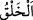
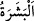
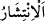

delillerindendir. Sonra sizi topraktan bir çağırdı mı hemen (kabirlerinizden)
çıkıverirsiniz.
26. Göklerde ve yerde olanlar hep O’nundur. Hepsi O’na boyun eğmiştir.
27. Yaratmaya başlayan, sonra onu tekrarlayan O’dur, ki bu, O’nun için pek
kolaydır. Göklerde ve yerde (tecelli eden) en yüce sıfat O’nundur. O, mutlak güç
ve hikmet sâhibidir.
Ey Âdemoğulları, Âdem (a.s.)’ın yaratılması dolayısıyla “Sizi” hayatın kokusunu hiç
koklamamış, zâtınız ve sıfatlarınız bakımından sizin şimdi bulunduğunuz durum ile
arasında hiçbir münâsebet bulunmayan “topraktan yaratması, O’nun delillerindendir.”
Yâni yeniden diriltmeye (ba‘s) delâlet eden Allâh’ın alâmet ve işâretlerindendir. Kâşifî
ise: “Allah Teâlâ’nın kudretinin nişanlarındandır” der. Çünkü Âdem (a.s.)’ın
yaratılması,
icmâlî
olarak
onun
zürriyyetlerinin
yaratılmasını
da
içinde
bulundurmaktadır. “
(yaratma)”, cüzleri bir araya getirmekten ve cisimlere şekil
vermekten ibârettir.
Allah insanı mütevâzı, alçak gönüllü ve tahammüllü olması için topraktan yaratmıştır.
Yer ve onun hakîkatleri devamlı olarak sükûnette ve varlığını ihsan etme hâlindedir. Bu
yüzden matlûbunun varlığını elde ettiği için sürekli sâkin ve sessizdir. Böylece aşağılık
mertebesinde iken yücelik mertebesine ulaşmış ve rızâya ermiştir.
“Sonra siz, (her tarafa) yayılan” etten ve kandan meydana gelmiş akıllı ve konuşan
“insanlar oluverdiniz.”
el-Müfredât’ta der ki: “
” derinin dış tarafıdır. İnsana ‘beşer’ denilmesi,
üstlerinde yün, kıl veya tüy bulunan hayvanların aksine derisinin tamamen kıllarla
örtülü olmayıp görünmesinden dolayıdır.” “
” lafzında bir kişi ve çoğul eşittir.
Kur’an’da insanın cüssesi ve görünüşü dikkate alındığında her yerde bu lafız özel
olarak kullanılmıştır.
“
” yayılmak, parça parça olmak demektir. Râğıb der ki: “İnsanların yayılması,
ihtiyaçları konusunda tasarrufta bulunmalarıdır.
Mânâ şöyledir: Bundan sonra siz birden bire yeryüzünde yayılan insanlar oldunuz.
Sizin baştan yaratılmanız tekrar yaratılmanıza delâlet etmektedir. Bu âyet, Hac sûresinin
başındaki “Ey insanlar! Eğer yeniden dirilmekten şüphede iseniz, şunu bilin ki, biz
sizi topraktan, sonra nutfeden, sonra alakadan (aşılanmış yumurtadan), sonra
uzuvları (önce) belirsiz, (sonra) belirlenmiş canlı et parçasından (uzuvları zamanla
oluşan ceninden) yarattık ki size (kudretimizi) gösterelim.” (el-Hac, 22/5) âyetinde
açıklananların özetidir. Yâni eğer siz öldükten sonra diriltilme konusunda şüphe
içindeyseniz, ilk yaratılışınıza bakın. Öldükten sonra diriltmeye muktedir olduğumuz
size âşikâr olsun da îman edin diye sizi kademe kademe yarattık. Şâir şöyle demiştir: